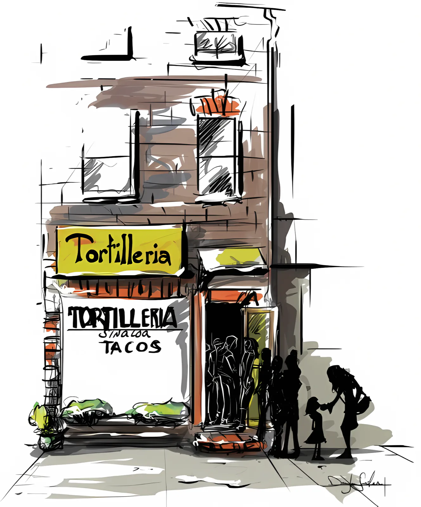

Menu & Catering
Everything is made from scratch with the freshest ingredients, and it’s all gluten free. Eat in at the counter, carry out, order online for pickup, or call us about a party.
PastorCarnitasBarbacoaCochinita pibilTingaLenguaChorizoRajasMilanesaBucheChampiñonesPapas con chorizo

Catering for your party
Let us cater your next party or event. We use the freshest ingredients we can get, so costs can be higher depending on the season. Call or email us and we’ll put it together.
- Starters & bocadillosChiles rellenos con chipotle y tuna, quesadillas, queso crema con tuna y jalapeño, queso crema con salsa chipotle, mermelada de fresas, nachos con pico de gallo
- Taco fillingsPastor, tinga, tripa, carnitas, barbacoa, pollo, res, milanesa de pollo, milanesa de res, cochinita pibil, vegetales, cabeza, buche, bistec con verduras, pollo con chipotle, frijoles con queso, chorizo, chivo, champiñones, rajas, papas con chorizo. Also camarones. Pounds of meat come with onions and cilantro, limes and both hot sauces.
- TamalesPollo verde, oaxaqueños, rajas con queso, pollo con mole, res, dulces, frijoles con queso, rajas
- Salsas & sidesGuacamole by the pint (each pint serves about 10). Salsa roja, pico de gallo, salsa verde, pico de mango, pico de manzana (each pint serves about 16). Rice, beans, green salad (dressing extra).
- DessertsPastel de tres leches, flan napolitano, arroz con leche, choco flan y imposible, capirotada, gelatina con frutas y lechera, ensalada de manzanas con yogurt, empanadas de cajeta
Find us
Open now1716 Eastern Ave, Baltimore, MD 21231
Half a block east of Broadway, in Upper Fells Point.
| Monday | 7am – 7pm |
| Tuesday | 7am – 7pm |
| Wednesday | 7am – 7pm |
| Thursday | 7am – 7pm |
| Friday | 7am – 7pm |
| Saturday | 7am – 7pm |
| Sunday | 7am – 6pm |
Neighbors and office workers come from Upper Fells Point, Fells Point, Harbor East, Patterson Park, Washington Hill and Canton, and points near and far.